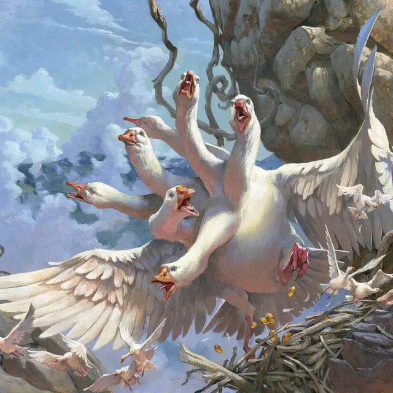

Матушка Гусыня
Goose Mother
Огромная Фея, без мировоззрения, именной НИП

Класс Доспеха 12
Хиты 114 (12к12 + 36)
Скорость 40 футов, летая 40 футов
| мод | спас | ||
|---|---|---|---|
| СИЛ | 17 | +3 | +6 |
| ЛОВ | 15 | +2 | +2 |
| ТЕЛ | 17 | +3 | +3 |
| мод | спас | ||
|---|---|---|---|
| ИНТ | 12 | +1 | +4 |
| МДР | 18 | +4 | +4 |
| ХАР | 5 | −3 | −3 |
Навыки Восприятие +10, Проницательность +7, Расследование +4
Иммунитет к состояниям бессознательность, глухота, испуг, ослепление, очарование, ошеломление
Чувства тёмное зрение 60 футов, пассивное Восприятие 20
Опасность 7 (2900 опыта)
Бонус мастерства +3
Особенности
Легендарное сопротивление (3/день). Если Матушка Гусынь проваливает спасбросок, вместо этого она может выбрать успех.
Несколько голов. У Матушки Гусыни пять голов. Каждый раз, когда матушка гусыня получает 25 или более урона за один ход, одна из её голов умирает. Матушка Гусыня умирает если все ее головы мертвы.
В конце своего хода Мать Гусынь отращивает по две головы за каждую голову, умершую с момента ее последнего хода, если только она не получила урон ядом с момента ее последнего хода. Матушка Гусыня восстанавливает 10 хитов за каждую голову, когда она отрастает заново.
Реактивные головы. За каждую голову Матушка Гусыня получает дополнительную реакцию, которую можно использовать только для совершения провоцированных атак.
Неусыпная. Пока Матушка Гусыня спит, по крайней мере одна из её голов бодрствует.
Действия
Мультиатака. Матушка Гусыня совершает столько атак Клювом, сколько у нее голов, и одну атаку Крыльями.
Клюв. . Рукопашная атака оружием: +6 к попаданию, досягаемость 10 фт, одна цель. Попадание: 6 (1к6 + 3) дробящего урона.
Крылья. . Рукопашная атака оружием: +6 к попаданию, досягаемость 10 фт., одна цель. Попадание: 9 (1к12 + 3) дробящего урона. Если цель — существо Большого размера или меньше, она должна преуспеть в спасброске Силы Сл 15, иначе будет сбита с ног.
Колыбельная диких гусей (перезарядка 5–6). Головы Матушки Гусыни нестройно гогочут колыбельную. Каждое существо по выбору Матушки Гусыни в пределах 10 футов от нее должно совершить спасбросок Телосложения Сл 15. При провале существо получает 7 (2к6) урон звуком и впадает в магический сон. В случае успеха цель получает только половину урона. Гогот слышен на расстоянии до 300 футов.
Существо, находящееся в магическом сне, находится в без сознания в течение 8 часов. Этот эффект заканчивается раньше для существа, если оно получает урон или другое существо действием встряхивает его.
Описание
Болота Элдраина населяют удивительно агрессивные гуси. Легенды рассказывают, что эти гуси произошли от чудовищной многоголовой птицы, обитающей глубоко в дебрях. Хотя рыцари Элдраина считают ее существование мифом, народ дикой природы знает, что Матушка Гусыня реальна.
Много веков назад предприимчивая ведьма приготовила пенистое рагу из крови гидры и гусиных перьев. Именно из этой ядовитой жижи и родилась Матушка Гусыня. За несколько дней Матушка Гусыня выросла до огромных размеров, а ведьма испугалась. Однажды ночью, пока Матушка Гусыня спала, ведьма ударила её по шее тесаком, но к ее ужасу, на месте первой головы выросли еще две. В ярости Матушка Гусыня сожрала ведьму и бесчинствовала глубоко в дебрях, где и живет по сей день.
Матушка Гусыня каждый час несет по одному золотому яйцу, точно в час. Иногда из этих яиц вылупляются кладки молодых гусей, которые вырастают и терроризируют болота Элдраина. В других случаях яйца содержат безделушки или ценные вещи. Феи дебрей Элдраина установили симбиотические отношения с Матушкой Гусыней, часто принося ей свежее мясо в обмен на сокровища внутри её золотых яиц.
Вы можете использовать таблицу Безделушки из гусиного яйца, чтобы определить содержимое золотого яйца. чтобы определить содержимое одного из яиц Матушки Гусыни, которому не суждено вылупиться в гуся или гигантского гуся.
Безделушки из гусиного яйца
| к12 | Содержимое яйца |
| 1 | Яйцо пустое, но на внутренней стороне скорлупы написано стихотворение или изображена замысловатая иллюстрация. |
| 2 | Под золотой скорлупой находится карамельное яйцо. |
| 3 | В яйце находится маленький игрушечный гусь, который издает громкий гогочущий звук, когда его сжимают |
| 4 | Яйцо содержит зелье силы великана [potion of giant strength] (холмового великана) без ёмкости. |
| 5 | В яйце находится жемчужина силы [pearl of power] |
| 6 | Яйцо содержит брошь защиты [brooch of shielding] |
| 7 | В яйце находится статуэтка чудесной силы [figurine of wondrous power] (серебряный ворон), которая автоматически активируется при вскрытии яйца, выпуская то, что кажется живой птицей. |
| 8-12 | Яйцо пустое |